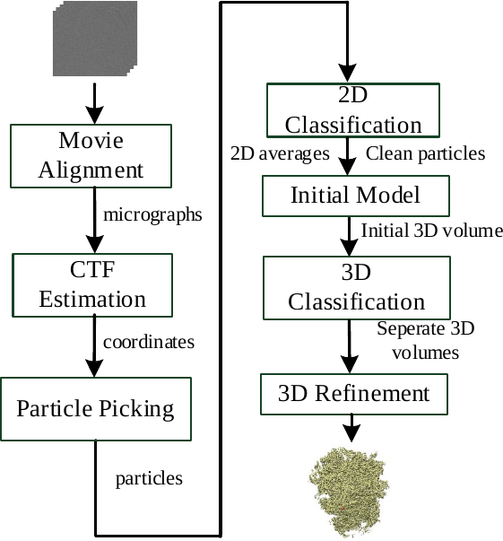
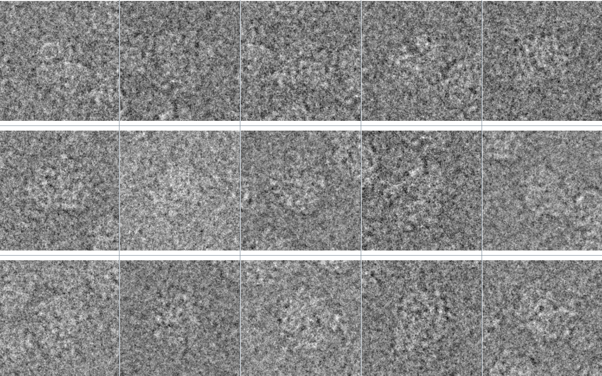
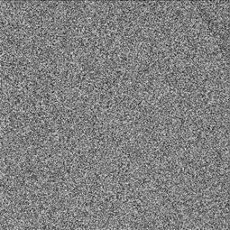
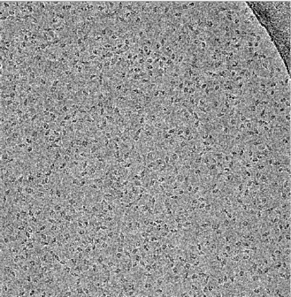
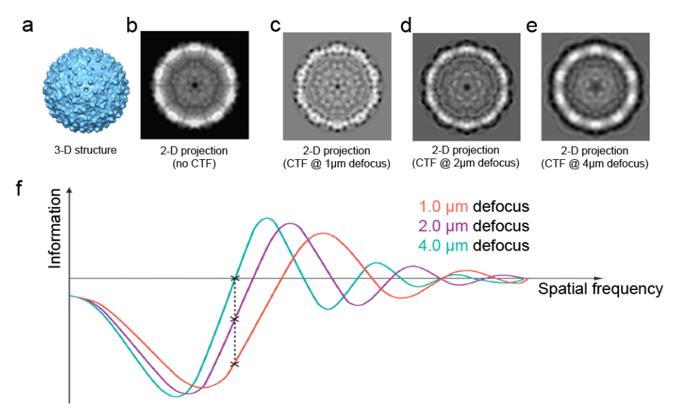
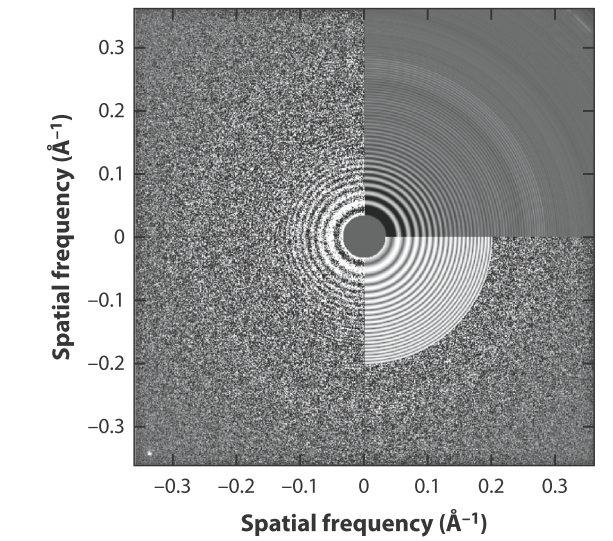
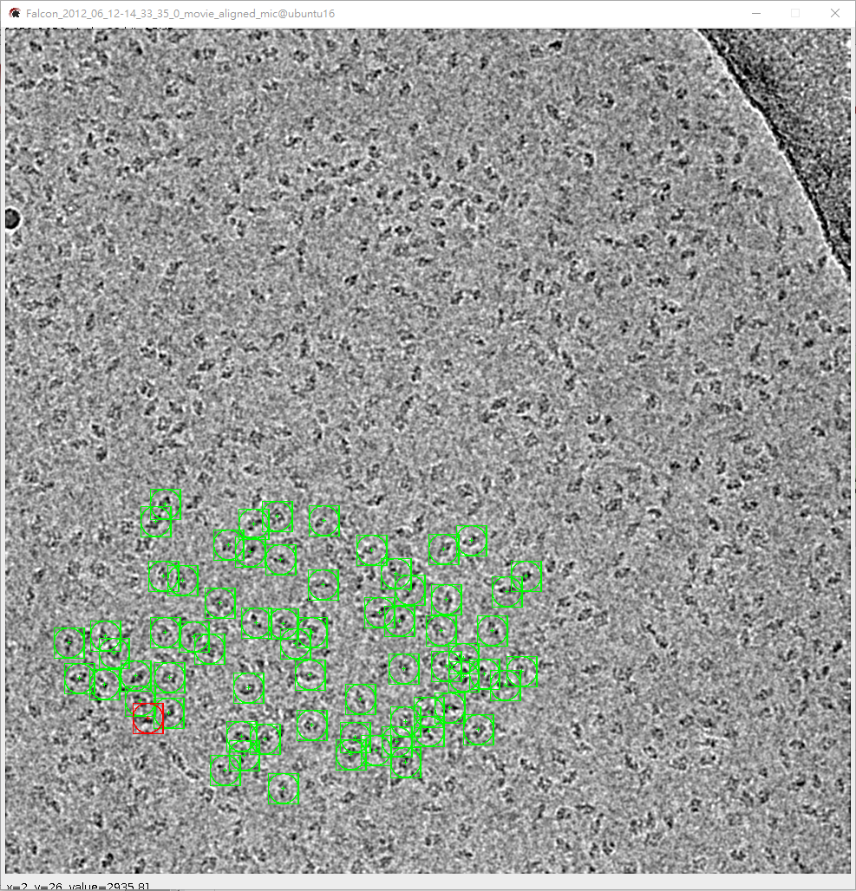
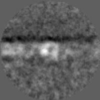
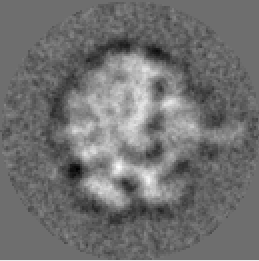
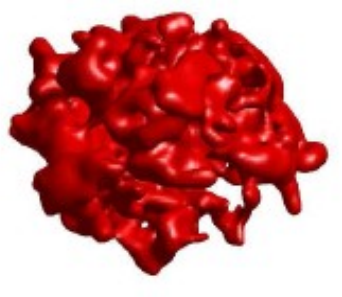

Cryo-EM 計算流程：從 Movie 到 3D 結構#
本章重點
單顆粒分析（single-particle analysis）的計算管線可拆成 movie → micrograph → particle stack → 3D volume 四個資料層級、十餘個計算階段。
前段（motion correction、CTF estimation、particle picking）處理整張 micrograph；後段（2D classification、3D reconstruction/refinement）處理抽出的粒子影像。
每個階段幾乎都是前面幾章學過的影像處理工具，套用在 cryo-EM 特定的物理模型之下。
3D variability／異質性分析是進階主題，本章只點出概念，細節留給投影片 14–17。
流程總覽#
一次完整的 cryo-EM 單顆粒分析，資料會依序經過四個層級：movie（顯微鏡直接錄下的多張 frame）→ micrograph（frame 對齊平均後的單張大圖）→ particle stack（從 micrograph 挑出、裁切成小圖的粒子集合）→ 3D volume（最終重建的密度圖）。中間有一連串計算階段把資料從一層推進到下一層：
{kind=link}

Fig. 7 主流程圖：Movie Alignment → CTF Estimation → Particle Picking → 2D Classification → Initial Model → 3D Classification → 3D Refinement。#
老師維護的 Computational-CryoEM 把這條管線整理成更完整的 12 個階段（Import Data、Image Formation、Motion correction、CTF estimation、Particle picking、2D classification、3D Tomographic Reconstruction、Ab-initio、3D refinement、3D variability、Postprocessing、Model Building），本章依教學需求選其中主線逐一介紹，每節末尾都附上對應小節的連結。
資料的規模與特性#
在進入各階段之前，先建立「這是多大的資料」的直覺。一張 micrograph 常見尺寸是 4096×4096 像素，上面可能散布數百顆粒子；一個真實研究等級的資料集，movie 數常在數百到數千張，累積抽出的粒子影像動輒達到 \(10^5\) 甚至 \(10^6\) 張量級。例如 80S ribosome 的公開資料集有 1,081 部 movie、4096×4096 像素的 micrograph，最終挑出 105,247 顆粒子；T20S proteasome 資料集則挑出近 5 萬顆粒子。這些粒子影像不僅數量龐大，且每一張的方向（orientation）都未知、訊噪比又極低（SNR ≤ 0.1，見第 5 章；Bendory et al. 2020, p.64 對資料規模與維度有類似估計）——這正是 cryo-EM 計算之所以困難的根源：要在龐大、未標註、低 SNR 的資料裡，找出跨影像共享的一致結構。
{kind=link}

Fig. 8 一批裁切後的粒子影像。單張看幾乎是雜訊，但集合起來的統計量足以支撐後續重建。#
→ 本書對應：影像處理基礎：從 NumPy 陣列到幾何變換（陣列、dtype、動態範圍是讀寫這類巨量影像檔的基礎）。延伸閱讀：Computational-CryoEM – Import Data。
Motion correction：把 movie 修正成一張乾淨的 micrograph#
直接偵測電子相機（DDD）的出現，讓顯微鏡可以用「movie 模式」錄下曝光過程中的多張 frame，而不是只存一張總和影像。這麼做是因為電子束會讓樣品產生微小漂移（beam-induced motion），若不修正，直接加總所有 frame 只會讓影像模糊。做法是把每張 frame 切成小 patch，用互相關（cross-correlation）估計各 patch 的局部位移，再擬合成隨時間變化的平滑軌跡，最後才對齊加總。常見工具包括 Unblur（MPI 平行）、MotionCor2（GPU）、Xmipp（MPI 平行）。
{kind=link}

Fig. 9 單張原始 frame，雜訊極高、幾乎看不出任何結構。#
{kind=link}

Fig. 10 多張 frame 對齊、平均後的 micrograph，可以看出顆粒輪廓。#
→ 本書對應：濾波與影像分割（patch 互相關與影像對齊，本質上就是局部濾波與模板比對）。延伸閱讀：Computational-CryoEM – Motion correction。
CTF estimation：估計成像時的對比損失#
顯微鏡必須刻意失焦（defocus）才能產生足夠的相位對比，但失焦同時也讓對比轉移函數（contrast transfer function, CTF）成為一個會在特定空間頻率處把訊號歸零、甚至反相的振盪函數。CTF 沒辦法從單張影像「移除」——零點處的資訊已經完全遺失，只能在合併多張不同 defocus 的影像時，用帶正負號的權重去補償（Sigworth 2016, p.60）。CTF 估計的做法是對 micrograph 的 2D power spectrum 做圓周平均，比對出現的同心圓環（Thon rings）與理論 CTF 曲線，擬合出 defocus 與散光（astigmatism）參數。常見工具有 CTFFind4（Intel MKL）、Gctf（GPU）、ASPIRE-CTF。
{kind=link}

Fig. 11 不同 defocus（1/2/4 μm）下的 2D 投影與對應的 Information vs. spatial frequency 曲線：defocus 越大，低頻對比越強，但高頻資訊衰減越快。#
{kind=link}

Fig. 12 實驗 power spectrum（左）與擬合的 CTF（右）四象限對照，這組同心圓環稱為 Thon rings。#
→ 本書對應：頻域影像處理：傅立葉轉換（CTF 本質是頻域上的一個濾波器，卷積定理與去卷積正是估計與校正 CTF 的數學基礎）。延伸閱讀：Computational-CryoEM – CTF estimation。
Particle picking：從 micrograph 挑出粒子座標#
CTF 估計完成後，下一步是在每張 micrograph 上找出粒子的位置，同時避開冰污染等雜質。方法大致分三類：reference-based（用旋轉過的參考影像對 micrograph 做互相關，如簡單的圓盤或高斯函數模板）、unsupervised（不用參考，靠粒子區域變異數較高的統計特性區分背景，如 KLT Picker）、discriminative（訓練分類器，近年多為神經網路，如 Topaz、crYOLO）。互相關方法會輸出一張 figure-of-merit（FOM）map，再用 peak detection 搭配門檻值與最小距離參數挑出候選位置。
{kind=link}

Fig. 13 Particle picking 軟體介面：micrograph 上以綠色標記標出被選中的粒子位置。#
→ 本書對應：濾波與影像分割（模板比對、cross-correlation、閾值化與形態學，都是這裡的核心工具）。延伸閱讀：Computational-CryoEM – Particle picking。
2D classification：用類平均清洗資料#
挑出的粒子影像仍然充滿雜訊，2D classification 把方向相近的粒子對齊、分群、平均，得到訊噪比大幅提升的「2D class average」。這一步除了讓人眼第一次看清楚粒子的大致形狀，更重要的用途是資料清洗：條紋狀、模糊不成形的 class average 通常代表冰污染或誤挑的假粒子，可以直接剔除；輪廓清楚的 class average 才會進入後續 3D 重建。常見方法有 2D 多參考對齊（ISAC）、最大概似方法（RELION 的 EM-ML）、以及混合式方法（ROME）。演算法不保證收斂到全域最佳解，且對離群值敏感，初始化方式往往決定最終結果好壞。
{kind=link}

Fig. 14 品質不佳的 2D class average：模糊且帶有條紋，通常代表混入了污染或誤挑的粒子，應予剔除。#
{kind=link}

Fig. 15 品質良好的 2D class average：輪廓清楚，可以放心用於後續 3D 重建。#
→ 本書對應：小波轉換（多尺度分析與閾值去噪的概念，正對應這裡「用平均把低 SNR 影像的結構訊號找出來」的目標）。延伸閱讀：Computational-CryoEM – 2D classification。
Ab-initio model 與 3D refinement：從 2D 平均到 3D 結構#
有了乾淨的粒子集合後，先用 ab-initio 方法（例如 common lines 或隨機起始加擾動）建立一個粗略的初始 3D 模型，再進入迭代式的 3D refinement：把目前的 3D 模型投影到大量候選方向（\(0 \le \varphi \le 360°\)、\(0 \le \theta \le 180°\)、\(0 \le \psi \le 360°\)），與每張粒子影像計算相關係數（cross-correlation），找出最匹配的方向與位移，再用這批「已知方向」的粒子重建出更新的 3D 模型，重複迭代直到收斂。這個投影—比對—重建的迴圈，正是第 7 章合成資料所模擬的「投影 + CTF + 雜訊」前向模型的逆過程。
{kind=link}

Fig. 16 最終重建出的 3D 密度圖（此處以 70S ribosome 為例）。#
→ 本書對應：合成資料的生成（模擬資料的前向模型——投影、CTF 卷積、加雜訊——正是 refinement 每一輪迭代比對所依賴的物理模型）。延伸閱讀：Computational-CryoEM – Ab-initial model、3D refinement。
進階主題：3D variability 與異質性（課後補）#
真實樣品裡的分子往往不是單一固定構型，而是多種功能狀態的混合（例如核糖體的不同轉動狀態），這種現象稱為異質性（heterogeneity）。3D variability analysis（3DVA）等方法試圖從同一批粒子中，同時估計出構型隨某個連續座標變化的軌跡，甚至畫出能量地形圖（energy landscape）找出最可能的反應路徑。這部分數學與計算細節較深，本章先點出概念，完整內容請見投影片 14–17。延伸閱讀：Computational-CryoEM – 3D variability analysis。